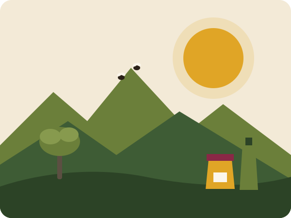

Thimdrine
Thimdrine

Miel de thym
Un miel ambré au goût puissant, récolté dans les collines du Rif.
180 DH · pot de 500 g
Coopérative de femmes · Nador
Miel de thym, huile d'olive et confiture de figue de barbarie : des produits du terroir sans additifs, du champ jusqu'à votre table.

Créée en 2015 dans la région de Nador, la coopérative Thimdrine réunit 25 femmes qui récoltent, transforment et conditionnent elles-mêmes leurs produits.
Nos ruches sont installées dans les collines de thym sauvage du Rif, nos oliviers poussent sur les terrasses familiales et nos figues de barbarie sont cueillies à la main chaque été.
Lire l'histoire de la coopérative →Les trois produits qui ont fait la réputation de Thimdrine sur les marchés de Nador.
Un miel ambré au goût puissant, récolté dans les collines du Rif.
180 DH · pot de 500 g

Première pression à froid, fruitée et légèrement poivrée.
90 DH · bouteille de 1 L

Douce et parfumée, préparée en petites quantités chaque été.
45 DH · pot de 350 g
Envoyez-nous votre demande de commande : nous vous répondons sous 48 heures pour organiser la livraison ou le retrait à Nador.
Faire une demande de commande